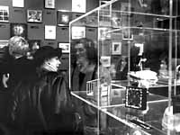

|
The History of the Show
The original Foot in the Door Show was conceived in 1979 by the MAEP's Artist Panel. It was an
innovative response, both to those concerned that artists would "let anyone in" to the museum and to
those critical that many notable artists had not yet been shown through the MAEP.
The first Foot in the Door Show, in 1980, featured work by 740 artists. It was a grand success, a
whirlwind of images and ideas. Regular inquiries were made to the program through the years-"When
is the next Foot in the Door?" In 1989, the artist panel decided to stage a second show, ten years
after the first. The Other Foot in the Door Show grew to include works by nearly 900 artists.
Today, nearly two decades and 110 exhibitions after the original "Foot," the MAEP is still
fundamentally and creatively committed to the democratic process.

The Artist Panel is still intrigued with this massive exhibition that forms itself entirely in the
absence of subjective curatorial judgment. The Foot in the Door Show is a grand event that continues to delight
artists and audiences alike.